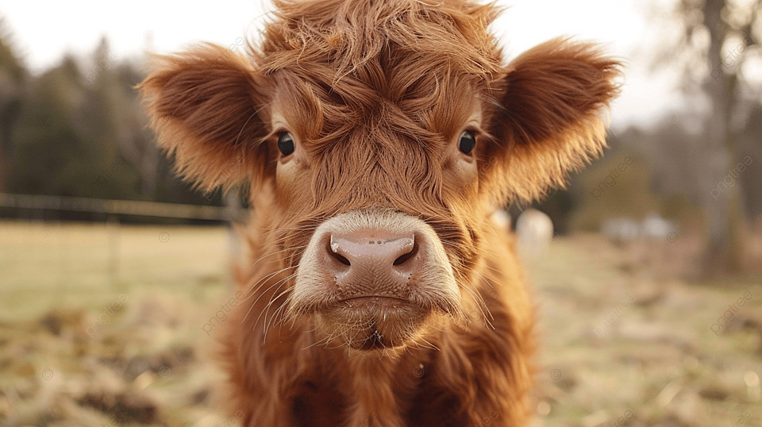
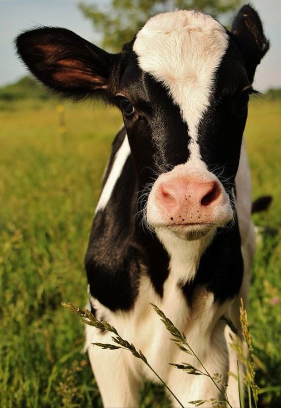

Welcome to my ranking of the cutest cows ever.
Ofcourse it goes without saying that every cow is cute and has its owns charms, but these 3 really moooove my heart.
The only reason I need for putting this one at 1 is this picture below:
With their big eyes, big snout and honey colored pels these kind hearted giants get a well deserved 2nd place.

Just look at it, how can you not love this one?
A loving shoutout to every cow ever, you are all the best.
If you want to see more cows, you can find some here: Cute Cows